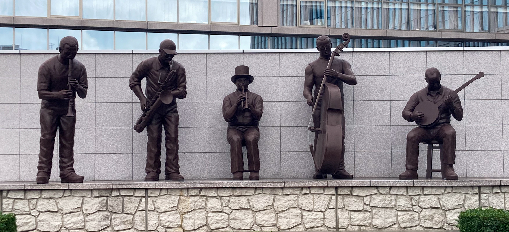
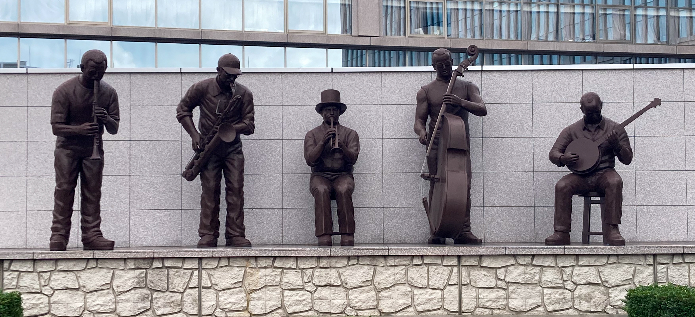
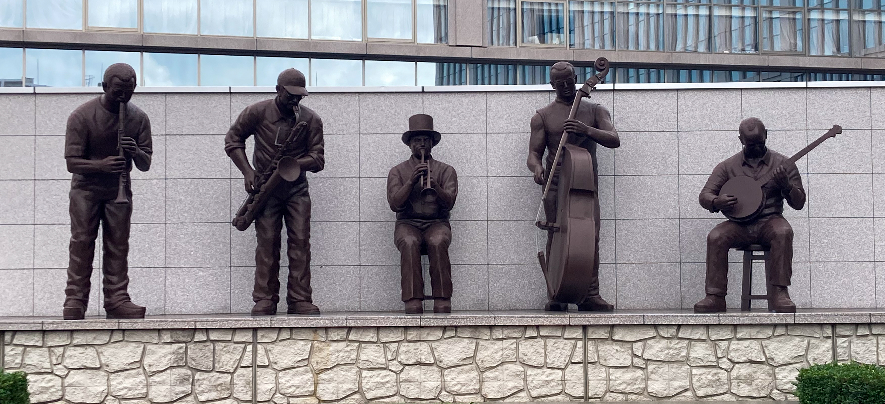
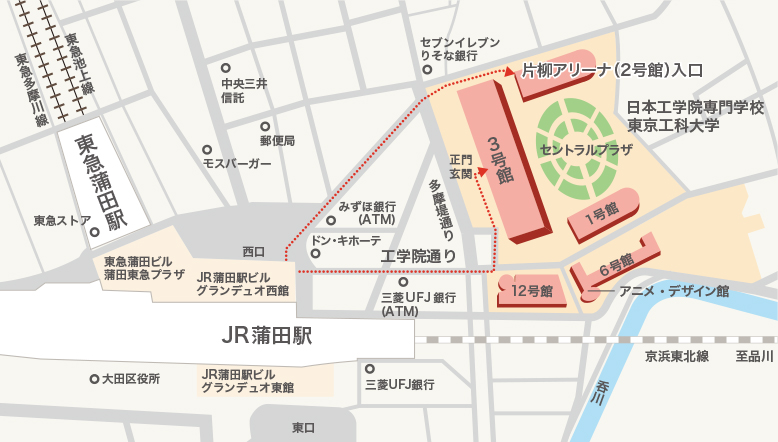

Welcome to this website

Welcome to this website
日本工学院専門学校
蒲田キャンパス
～東京都心の空の玄関にほど近い、独立した大型キャンパス～

| フロア | 施設 | 説明 |
|---|---|---|
| 12F | 学生ラウンジ | 学生が自由に使えるスペースです |
| 有隣堂 | 学用品や教科書、雑誌、専門図書を購入できます | |
| 9F | IT カレッジ教員室 | IT カレッジの先生がいます |
| 7F・6F | 実習室 | コンピュータを使用した実習で使用する教室です |
| 一般教室 | 座学で使用する教室です | |
| 5F | AI システム科実習室 | 情報ビジネス科ホテルコース実習室 |
| 情報ビジネス科ホテルコース実習室 | 本番さながらの実習を行える設備が整った実習室です | |
| 4F | 図書室 | 個室もあるため、集中して勉強に励めます |
| 2F | 教育・学生支援部 | 各種手続きや証明書の発行を行ってくれる場所です |
| 1F | キャリアサポートセンター | 就職支援を行ってくれます |
| B1F | 片柳記念ホール | 各種発表会や講演を開催するためのホールです |